☠ One Piece ♥ Andrea ☠
Personajes
Frases
Galería
Tripulación de Nuestros Corazones
Frases Icónicas y Románticas
Haz clic en el botón para ver una frase especial ♥
Mostrar frase
Galería
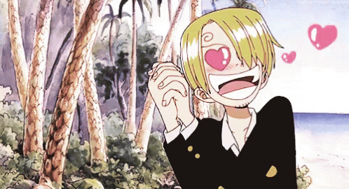 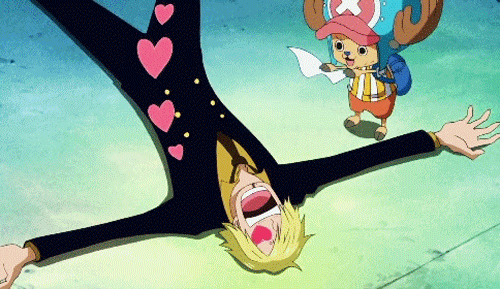 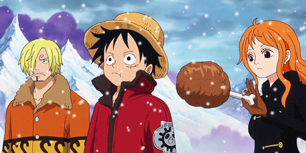
Tu navegador no soporta la reproducción de audio.
üéµ Disfruta esta canci√≥n mientras navegas ♥
Para ti de Anibal con mucho cariño


 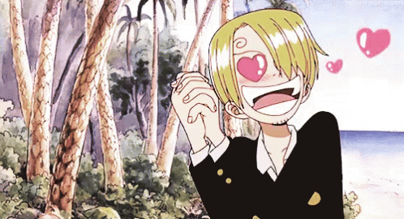
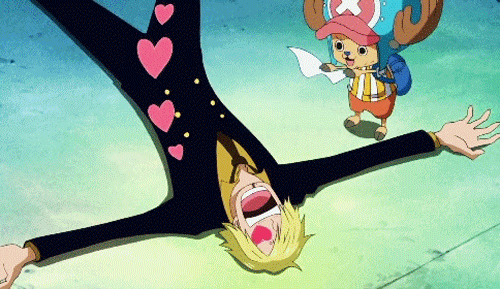
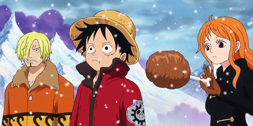
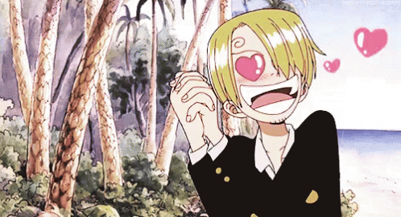
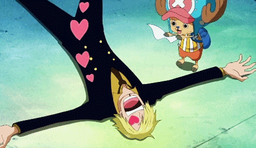
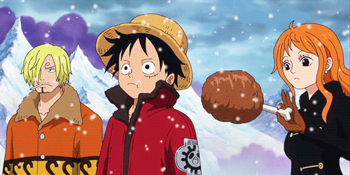
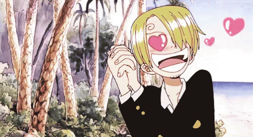
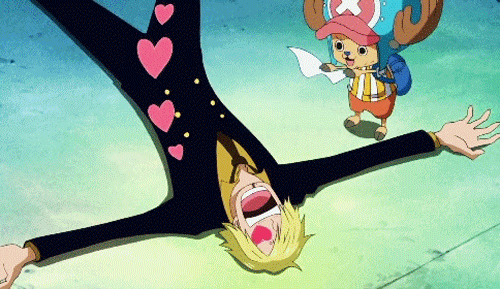
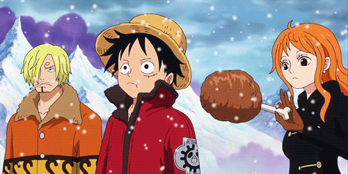
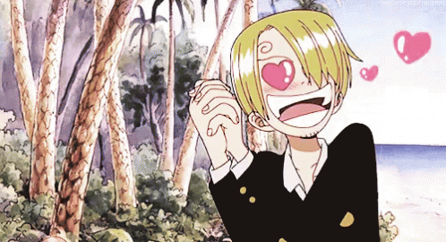
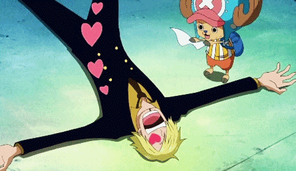
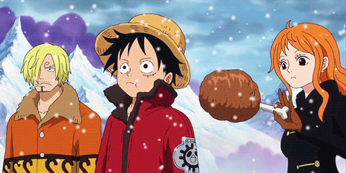